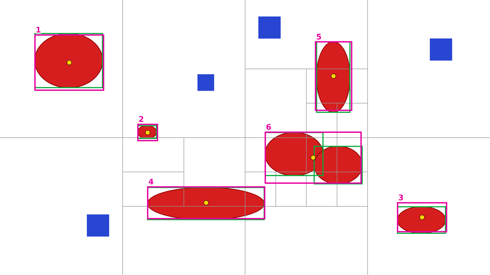
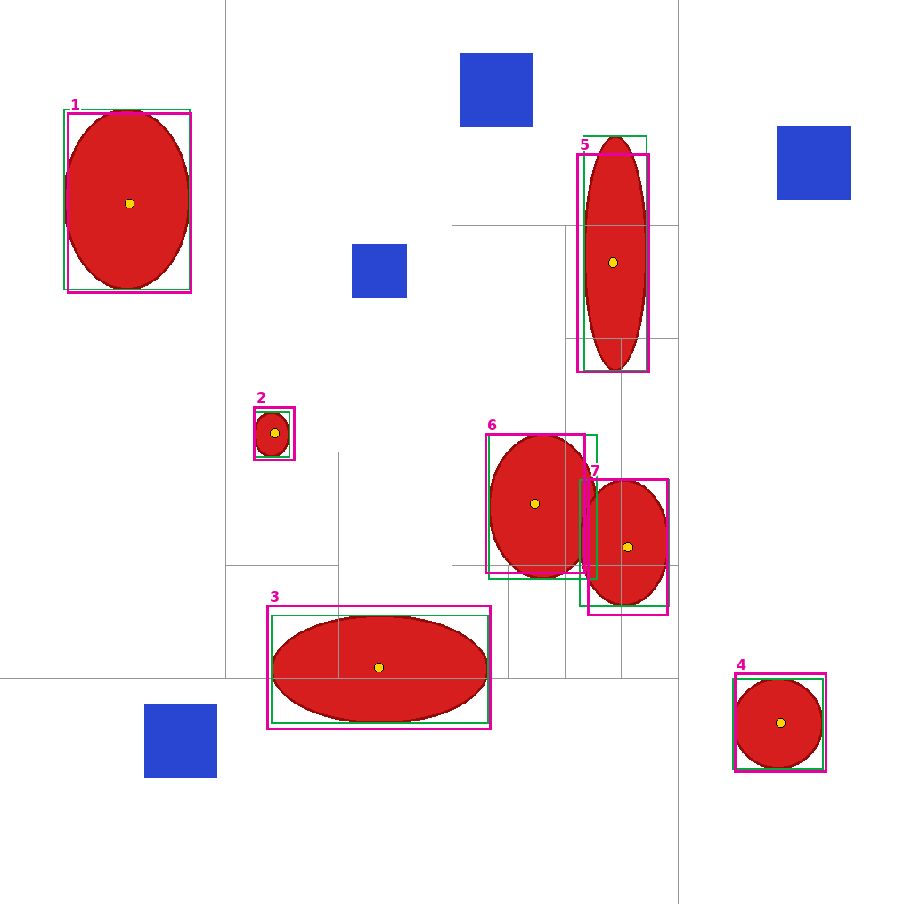
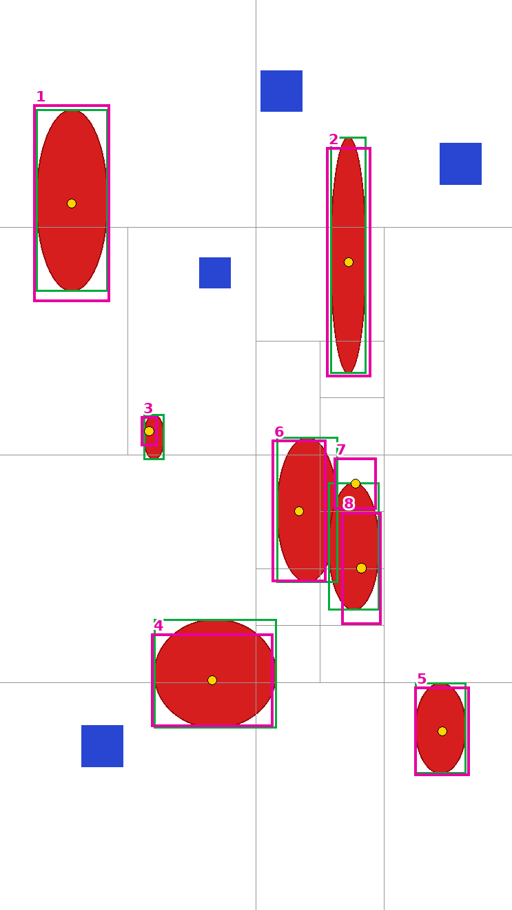

Synthetic test picture (7 red ovals, 4 blue squares), no benchmark photo. Run: results/probe-jev-split-20261015-210225.json
Jev's final box (numbered) true box of each oval middle of Jev's box (its point) where the picture was cut in half
6 boxes for 7 ovals · 6 middles on an oval · overlap ≥50%: 6, ≥75%: 4, ≥90%: 2 · 85 requests, 1.85 s, $0.0052

| box | best overlap | with | middle on an oval |
|---|---|---|---|
| 1 | 91% | oval 1 | yes |
| 2 | 73% | oval 5 | yes |
| 3 | 81% | oval 4 | yes |
| 4 | 95% | oval 2 | yes |
| 5 | 90% | oval 3 | yes |
| 6 | 51% | oval 6 | yes |
7 boxes for 7 ovals · 7 middles on an oval · overlap ≥50%: 7, ≥75%: 7, ≥90%: 5 · 81 requests, 1.74 s, $0.0052
| box | best overlap | with | middle on an oval |
|---|---|---|---|
| 1 | 96% | oval 1 | yes |
| 2 | 99% | oval 3 | yes |
| 3 | 96% | oval 2 | yes |
| 4 | 94% | oval 5 | yes |
| 5 | 93% | oval 4 | yes |
| 6 | 80% | oval 6 | yes |
| 7 | 86% | oval 7 | yes |
7 boxes for 7 ovals · 7 middles on an oval · overlap ≥50%: 7, ≥75%: 6, ≥90%: 1 · 84 requests, 1.19 s, $0.0028

| box | best overlap | with | middle on an oval |
|---|---|---|---|
| 1 | 91% | oval 1 | yes |
| 2 | 71% | oval 5 | yes |
| 3 | 85% | oval 2 | yes |
| 4 | 85% | oval 4 | yes |
| 5 | 81% | oval 3 | yes |
| 6 | 83% | oval 6 | yes |
| 7 | 83% | oval 7 | yes |
8 boxes for 7 ovals · 7 middles on an oval · overlap ≥50%: 6, ≥75%: 4, ≥90%: 0 · 59 requests, 1.15 s, $0.0021

| box | best overlap | with | middle on an oval |
|---|---|---|---|
| 1 | 86% | oval 1 | yes |
| 2 | 76% | oval 3 | yes |
| 3 | 42% | oval 5 | yes |
| 4 | 82% | oval 2 | yes |
| 5 | 86% | oval 4 | yes |
| 6 | 74% | oval 6 | yes |
| 7 | 15% | oval 7 | yes |
| 8 | 50% | oval 7 | yes |